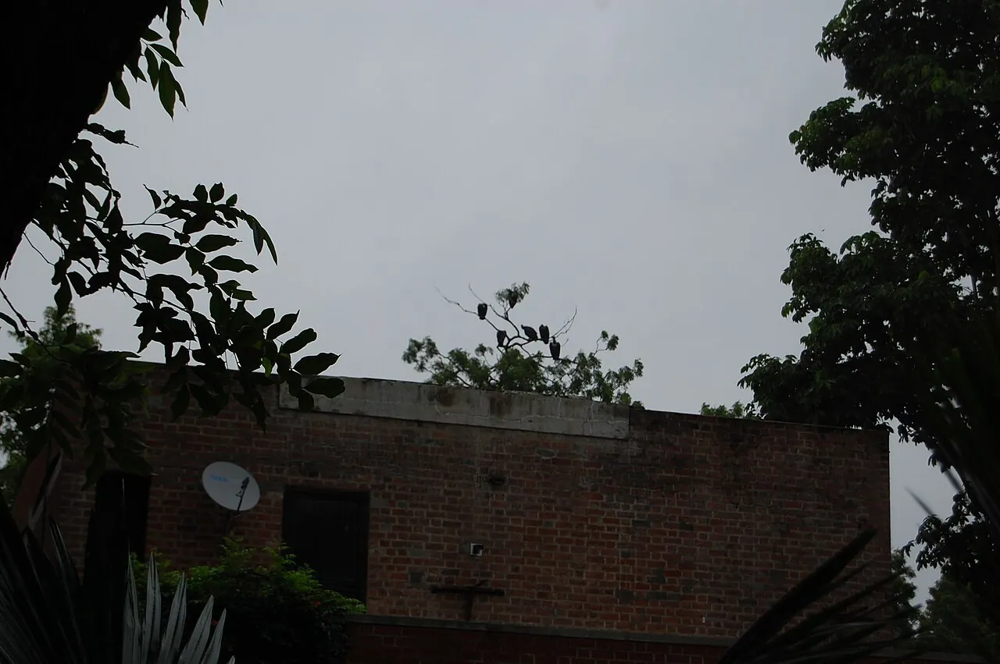
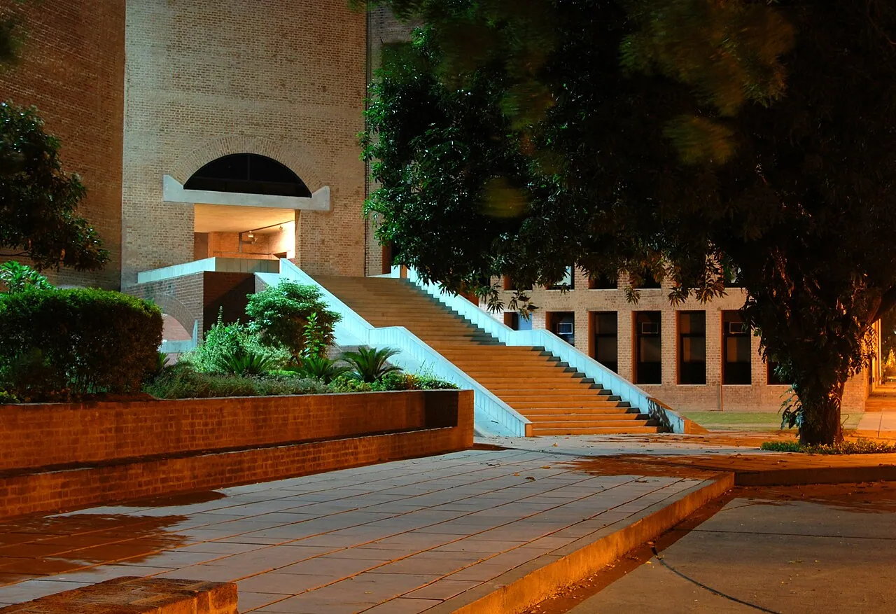
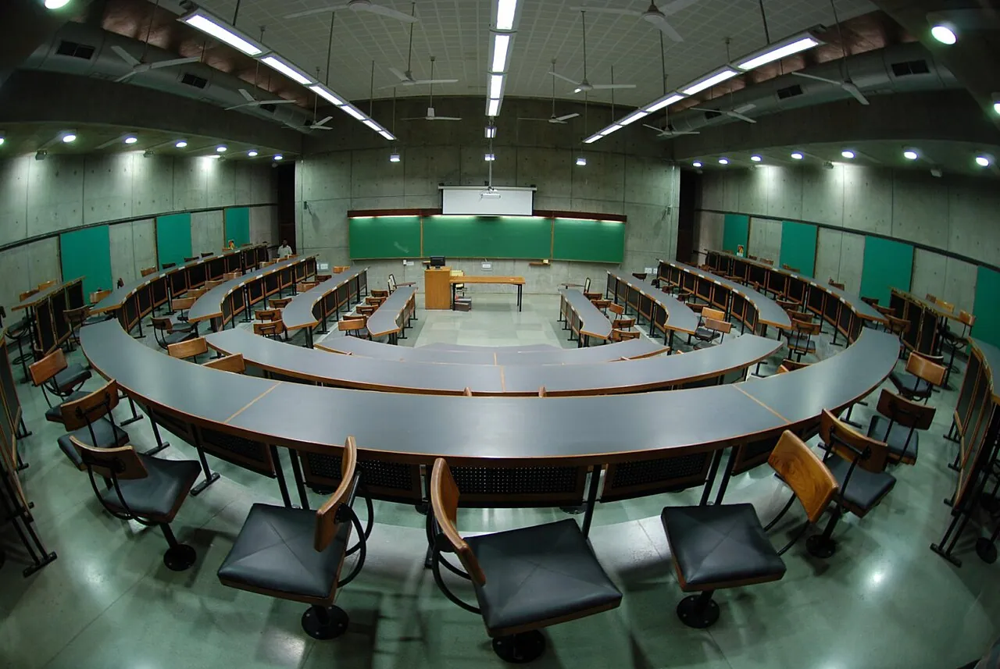

1/5 · Exterior · Fauna on campusPhoto: Students of IIMA · CC BY 3.0 · source

2/5 · Exterior · Fauna on campusPhoto: Students of IIMA · CC BY 3.0 · source

3/5 · ExteriorPhoto: Students of IIMA · CC BY 3.0 · source4/5 · Interior · Corridor in old campus classroom blockPhoto: Students of IIMA · CC BY 3.0 · source

5/5 · Interior · Spacious and beautiful class room with modern facilitiesPhoto: Kalyan Shah · CC BY-SA 3.0 · source